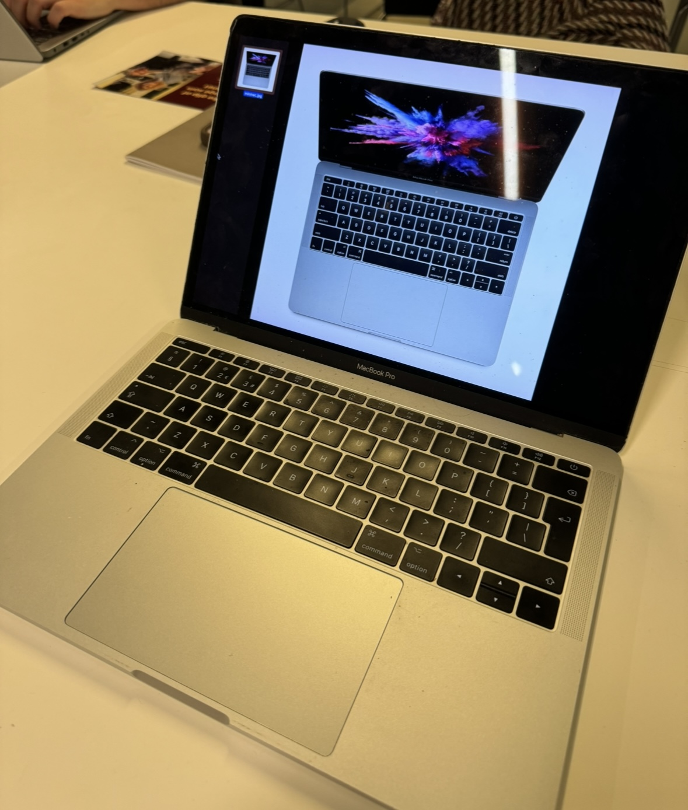

Min Computer:

Type
Min copmuter er in Macbook pro fra 2017 som er 13 inches og space gray. Jeg har haft den for 5 år nu og jeg bruger den til alt.
Specs
- Serial number:
- C02V3265HV2D
- MacOs:
- Ventura 13
- Processor:
- Intel Core i5
- Memory:
- 8 GB